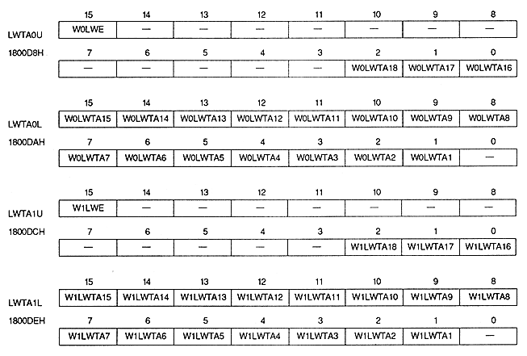

Line window enable bit : Line window enable bit (W0LWE, W1LWE)
| W0LWE | 1800D8H | Bit 15 | For W0 |
| W1LWE | 1800DCH | Bit 15 | For W1 |
| WxLWE | Process |
| 0 | Do not change normal window to line window |
| 1 | Make the normal window a line window |
When this bit is 1, be sure to store the line window table in VRAM.